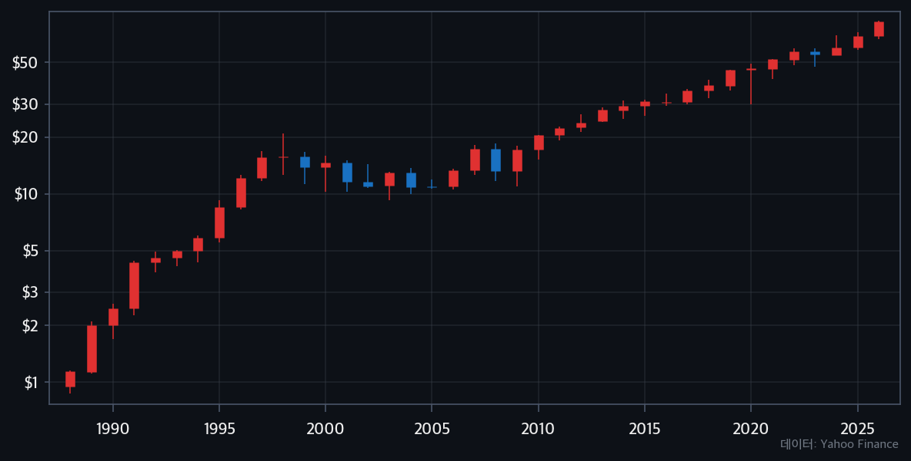
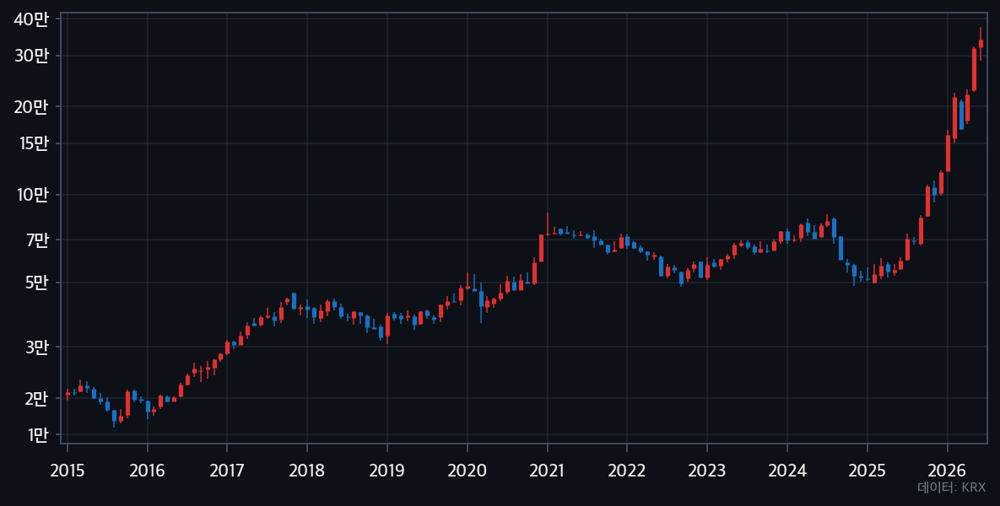
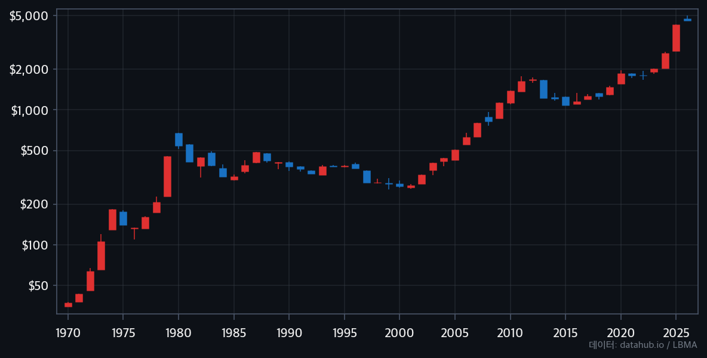

최근 20여년 전 순풍산부인과 하이닉스 장면이 화제가 됐다. 화면 속 하이닉스 주식 가격은 460원! 지금의 하이닉스 광풍을 생각하면 믿기 힘든 가격이다. 그때 하이닉스를 사서 지금까지 보유한 사람이 있을까? 사고 팔고를 반복해야 돈을 벌 것 같지만 역사는 반대를 말한다. 당시 위험한 하이닉스는 아니더라도 삼성전자, 현대차를 그때 사서 묻어두고 있었다면?
웬만해선 시장을 이길 수 없다
주식을 자주 사고 팔면 매매 수수료와 세금이 쌓인다. 더 큰 문제는 타이밍을 맞추는 게 거의 불가능하다는 것이다. 시장은 다양한 정보가 반영되어 움직이기 때문에 개인이 시장보다 수익을 내기는 정말 어렵다. 내릴 것 같아서 팔았더니 오르고 오를 것 같아서 샀더니 내리는 이유가 그것이다. 전문 트레이더도 장기적으로 시장 평균을 이기지 못한다는 연구 결과는 넘쳐난다.
그래서 나온 결론이 바이 앤 홀드(Buy and Hold) — 좋은 것을 사서 그냥 갖고 있는 것이다.
워런 버핏의 코카콜라
바이 앤 홀드의 대표 사례는 워런 버핏과 코카콜라다. 버핏은 1988년에 코카콜라 주식을 대량으로 매수했고 지금까지도 보유하고 있다. 코카콜라는 뭔가 혁신적인 기업이 아니다. 하지만 전세계에서 최고의 인지도를 가지고 있고 누구나 사먹는 브랜드다. 수십 년 동안 전 세계에서 팔리는 일등 브랜드를 장기 보유한 것만으로 버핏은 어마어마한 수익을 거뒀다.

삼성전자, 10년만 버텼어도
한참 장기 투자가 강조되면서 2015년쯤 한 투자자가 방송에 나온 적이 있다. 90년대부터 꾸준히 삼성전자를 사서 보유했고 수익률이 상당하다는 내용이었다. 특별히 대단한 분석을 한 게 아니고 그냥 좋은 회사라고 생각해서 샀고 팔지 않았을 뿐이다.
그사이 주가는 반 토막도 나고 박스피도 겪고 온갖 악재가 있었다. 팔 이유는 수도 없이 많았다. 버티는 게 실제로 어떤 느낌인지는 이 밈이 잘 표현한다:

그럼에도 팔지 않은 것이 정답이었다.

금도 장기 보유가 답
주식만 그런 게 아니다. 금 같은 실물 자산은 이미 장기 투자가 당연한 전략이다. 아래 차트를 보면 금은 20년간 하락하는 구간도 있다.
그럼에도 최후에 살아남는 건 장기 보유다. 1970년대에 금을 사서 지금까지 보유한 사람의 수익률은 상상을 초월한다. 결혼할 때 금을 사는 이유가 있다.

AI로 퀀트 전략을 짜봤지만
나도 바이 앤 홀드를 쉽게 믿지 못하고 AI를 써서 여러 퀀트 전략을 직접 테스트해봤다. 글로벌 지표, 개별 기업 재무제표를 분석하고 모멘텀 전략, 이동평균 크로스오버, 변동성 기반 리밸런싱 등 그럴듯한 전략을 몇 가지 만들어 백테스트를 돌렸다.
결론부터 말하면 바이 앤 홀드를 크게 이기는 전략은 없었다. 백테스트 결과가 조금 나은 경우도 있었지만 거기에 매매 수수료, 세금, 그리고 신경 쓰는 시간과 스트레스까지 감안하면 오히려 손해였다.
기관 투자자는 기계적인 전략에 따라 포트폴리오 기반으로 매매하여 작은 수익률이라도 투자 금액이 워낙 크니 수익도 상대적으로 크다. 하지만 개인 투자자에게 그 방법은 적합하지 않다.
결국 가장 단순한 전략이 제일 강했다. 사고, 기다리고, 팔지 않는 것.
바이 앤 홀드도 공부해야 한다
바이 앤 홀드라고 단순히 사서 가지고 있는 게 아니다. 대부분은 월급에서 조금씩 떼어 적립식으로 투자한다. 그럼 매달 어떻게 투자해야 할까라는 문제가 나온다.
여기서 DCA, VA 등 적립식 투자 방법에 대해 공부가 필요하다. 아래 좋은 글이 있다.
→ DCA를 쉽게 이해하도록 설명한 글 (투자자교육협의회)
→ 좀더 본격적으로 DCA, 일괄 매수 보유, VA 비교 (KB자산운용)
다만 달걀은 여러 바구니에
바이 앤 홀드와 별개로 한 가지 자산에 전 재산을 몰빵하는 건 위험하다. "달걀을 한 바구니에 담지 마라"는 투자 격언이 그것이다.
아무리 좋은 자산이라도 위험은 존재한다. 한 자산군이 오를 때 다른 자산군은 내리기도 한다. 그래서 포트폴리오 분산은 바이 앤 홀드와 함께 반드시 고려해야 한다. 주식, 금, 부동산, 채권 등 여러 자산을 분산 투자하고 그 각각을 장기 보유하는 것이 현실적인 전략이다.
→ 포트폴리오 전략 비교 (Portfolio Charts)
뭔가 혹해서 사고 팔면 재미는 있을 수 있다. 그런데 그게 수익으로 이어지는 경우는 생각보다 훨씬 드물다. 기본이 제일 강하다는 걸 다시 한번 생각해본다.